Seja bem-vindo ao Oriyon Education!
Esta plataforma foi criada para centralizar materiais de estudo, exercícios, recomendações e o acompanhamento do desempenho de cada aluno. Aqui, você poderá consultar suas notas, acompanhar sua evolução por meio de rankings baseados em pontuação e acessar informações sobre sua jornada de aprendizagem em cada conteúdo estudado.
Meu objetivo é tornar o aprendizado mais organizado, transparente e motivador, oferecendo uma visão clara do seu progresso acadêmico de forma exclusiva.
